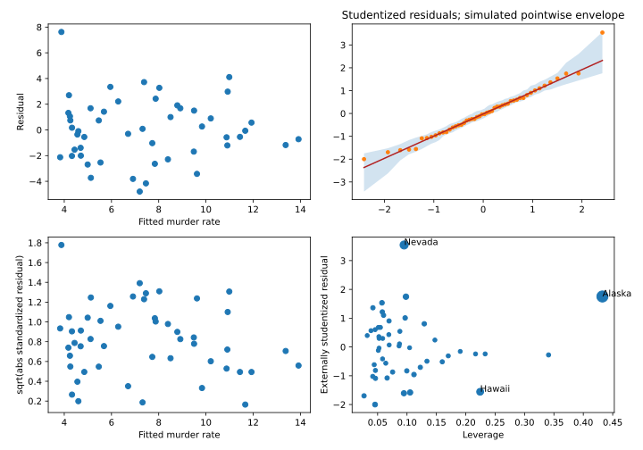

IIT Hyderabad · NPTEL · Independent study edition
Model selection, evaluation, and an end-to-end case study
16.1 The fitted procedure is what must be evaluated
Adding a predictor cannot increase the minimum training residual sum of squares in a nested least-squares model. That fact alone cannot decide whether the added predictor improves prediction. It describes an optimization on observations already used to fit the model. The object deployed on new data includes the choice of variables, transformations, scaling, component count, and any tuning. An evaluation that treats those choices as fixed after looking at the test responses evaluates a different procedure.
Let a full-rank fixed design $\mathbf X$ have $n$ rows and $q$ columns. Suppose the conditional mean belongs to its column space and the error covariance is $\sigma^2\mathbf I$. With projection $\mathbf H$ onto that space, the training residual is $(\mathbf I-\mathbf H)\boldsymbol\varepsilon$. The expected training squared-error sum is $\sigma^2\operatorname{tr}(\mathbf I-\mathbf H)=(n-q)\sigma^2$. This follows from $E(\boldsymbol\varepsilon^T\mathbf M\boldsymbol\varepsilon)=\sigma^2\operatorname{tr}\mathbf M$ for a deterministic matrix $\mathbf M$ and zero-mean errors.
Now obtain independent new responses at the same design points, $\mathbf y_{new}=\mathbf X\boldsymbol\beta+\boldsymbol\varepsilon_{new}$. Their prediction error using the original fitted mean is $\boldsymbol\varepsilon_{new}-\mathbf H\boldsymbol\varepsilon$. Independence gives covariance $\sigma^2(\mathbf I+\mathbf H)$, so its expected squared-error sum is $(n+q)\sigma^2$. The difference is $2q\sigma^2$.
This is a proved optimism calculation for a fixed, correctly specified, homoscedastic mean model. It is not an exact correction for every variable-selection algorithm or an arbitrary misspecified model. Its mechanism is useful: a fitted model uses random noise in its training data to reduce training loss. The same noise-fitting does not predict a new disturbance.
A held-out sample can assess a complete fitted procedure. If preprocessing estimates a mean, scale, rotation, or missing-value rule, estimate it on the training subset. If a model is chosen by comparing candidate losses, perform that comparison inside the training portion or an inner validation loop. Preserve an outer test set for the final assessment. Repeatedly choosing methods by their test results makes those results part of selection. A new independent assessment would then be required.
The source introduces information-criterion selection at Variable Selection and Model Evaluation, 00:16. The fixed-design optimism proof and explicit held-out workflow are authored extensions.
16.2 AIC, BIC, adjusted fit, and nested comparisons
For independent Gaussian errors with unknown variance and a full-rank mean model, write $S$ for the fitted residual sum of squares. Assume $n>q$ and $S>0$, so the fitted variance is positive and the maximized likelihood is finite. The variance maximum-likelihood estimator is $S/n$, while the unbiased residual variance estimator is $S/(n-q)$. Substituting the maximum-likelihood estimator into the Gaussian log likelihood gives
$$-2\widehat\ell=n\{\log(2\pi)+1+\log(S/n)\}.\tag{16.1}$$
There are $K=q+1$ freely fitted likelihood parameters if the variance is counted alongside the $q$ regression coefficients. The usual likelihood-based criteria are $\mathrm{AIC}=-2\widehat\ell+2K$ and $\mathrm{BIC}=-2\widehat\ell+K\log n$. Their broader statistical motivations involve assumptions and approximations beyond this substitution; neither formula by itself proves that its selected model is the true model.
For comparing unweighted Gaussian mean models on the same response rows, R's extractAIC.lm uses $n\log(S/n)+2q$. It omits common likelihood constants and does not count the estimated scale in its degrees-of-freedom term. Consequently, its printed number differs from AIC(lm(...)) by a constant common to these candidate models. A Python conversion must match the intended convention before comparing displayed scores. Rankings remain the same when the difference really is constant across candidates.
The logarithm in $n\log(S/n)$ cannot be replaced by $S/n$ when the variance is unknown. BIC's per-parameter penalty exceeds AIC's when $\log n>2$. This inequality has the opposite direction from saying that the logarithm becomes smaller as the sample grows. A heavier penalty can favor a simpler model, but the selected answer still depends on likelihood changes and the candidate search.
With an intercept, define $S_{tot}=\sum_i(y_i-\bar y)^2$ and assume $S_{tot}>0$. Then $R^2=1-S/S_{tot}$ and, for $n>q$, adjusted $R^2=1-[S/(n-q)]/[S_{tot}/(n-1)]$. Its degrees-of-freedom correction can decrease when a predictor is added. It remains a statistic computed on fitted data, rather than an untouched estimate of generalization error.
For prespecified nested Gaussian homoscedastic models with ranks $q_R<q_F<n$ and residual sums $S_R,S_F$, the classical comparison is
$$F=\frac{(S_R-S_F)/(q_F-q_R)}{S_F/(n-q_F)}.\tag{16.2}$$
Under the reduced model, the extra fitted component and full residual component are independent orthogonal Gaussian projections. Their scaled squared lengths have chi-square distributions with the numerator and denominator degrees of freedom, yielding an exact $F_{q_F-q_R,n-q_F}$ reference. If the reduced model was chosen by first inspecting these same outcomes, this prespecified-test calibration no longer describes the entire selection procedure. A large p-value does not prove excluded coefficients are zero.
Implementation conventions: R extractAIC; R step. The exact score derivation above corrects caption ambiguities while retaining the source selection problem.
16.3 A greedy search and a reproducible source example
Backward stepwise selection begins from a specified upper model. At each step it compares deleting one permitted term with retaining the current model, chooses the best score, and stops when no permitted deletion improves that score. Forward selection begins from a lower model, compares allowed additions, and stops by the analogous rule. A search involving interactions must respect the chosen hierarchy of terms. The supplied Python implementation handles the single-column main-effect scope used in the source example.
This is a greedy local search. It does not generally examine every subset or guarantee the globally smallest score. Forward and backward paths can terminate at different models. All candidate fits must use the same observation rows; otherwise a score change can reflect a changed response sample instead of a changed model. Missing-value filtering therefore precedes the candidate search and uses one documented rule.
The source's air-pollution table was recovered through the pollution data in SMPracticals. It has 60 metropolitan observations and 15 predictors, with mortality as the response. Matching the source's full-model score and both complete selection paths provides a stronger identification than a similar dataset title. The original field order maps to source labels $X_1,\ldots,X_{15}$ as precipitation, January temperature, July temperature, older-population percentage, household size, education, housing, density, non-white population percentage, white-collar employment, poverty, hydrocarbon pollution, nitric-oxide pollution, sulphur-dioxide pollution, and humidity.
The executed full-model extractAIC score is $439.787096634$, matching the source's displayed $439.79$. Backward deletion ends with predictors numbered $1,2,3,4,5,6,9,12,13$, score $429.633968121$, and adjusted $R^2=0.713883873$. Forward addition follows $9,6,2,14,1,3,5$, ending with score $428.828918239$ and adjusted $R^2=0.709841820$. A fresh R reference run reproduces the same retained terms and scores. The complete paths are in the laboratory and its stored output.
These historical aggregate variables describe associations across metropolitan areas. Stepwise inclusion does not establish individual-level effects or causal impacts of the selected socioeconomic variables. Their coding and historical measurement context remain part of their interpretation. The program's additional held-out example is explicitly an authored evaluation demonstration; it is not a source claim that the historical data establish a useful forecasting system.
Source: selection demonstration, 16:12. Data description and original study attribution: SMPracticals pollution documentation.
16.4 A case study connects fitting to diagnostics
The second recording starts with R's women dataset. Its 15 rows contain average weights associated with heights, rather than 15 independently sampled individual patients. The Python conversion fits the same raw linear, quadratic, and cubic powers. Adjusted $R^2$ increases from $0.990318281$ to $0.999385928$ and $0.999722156$. The linear slope is $3.45$; adding a quadratic term changes the linear coefficient to approximately $-7.348319$ because that coefficient now describes the slope contribution at a different algebraic reference. It does not imply that the fitted curve decreases over the observed heights. Its derivative includes the quadratic term.
The state case uses state.x77 with murder rate as response and Population, Income, Illiteracy, and Frost as predictors. The conversion preserves those columns, computes confidence intervals, VIF, leverage, Cook distance, externally studentized residuals, and the diagnostic plots. A reduced model retains Population and Illiteracy. Comparing it with the full model gives $F=0.006108462$ with p-value $0.993910981$. Backward AIC selection also retains that pair. These are the actual reproduced calculations, not proof that omitted variables have no association under every model.

Nevada's externally studentized residual is $3.542928636$; a two-sided individual residual test with a Bonferroni adjustment across 50 states gives p-value $0.047544180$. This is an investigative diagnostic, not a reason to remove a valid state automatically. Deletion changes the population represented by the analysis. Examine data quality and scientific model fit before choosing a revised analysis.
The source also reports a Durbin-Watson procedure. The preserved state ordering gives statistic $2.317691198$. A residual-resampling implementation with an explicit new seed produces a simulated two-sided p-value; it is not expected to match the source's unreported random seed exactly. More fundamentally, alphabetic state order is not a time axis. A serial-correlation interpretation based on that arbitrary order is unsupported. Spatial or regional dependence would need an appropriate structure.
The laboratory includes component-plus-residual plots, a conditional Box-Cox profile and a small exhaustive subset comparison using Mallows' $C_p$. The Box-Cox family for positive responses is $(y^\lambda-1)/\lambda$, with logarithm as the continuous limit at zero. Profiling its Gaussian regression likelihood requires the transformation Jacobian; fitting transformed responses and comparing only residual sums on incompatible scales omits that term. The fitted conditional profile power is $0.865322$. Such a fitted power and a hypothesis that power one is adequate are different reported quantities.
For predictor $j$, a component-plus-residual plot places $e_i+\widehat\beta_j x_{ij}$ against $x_{ij}$. Adding back its fitted component lets departures from a straight partial relation appear. For a candidate with $q_C$ coefficients including its intercept, the subset comparison uses $C_p=S_C/s_F^2-n+2q_C$, where $S_C$ is its residual sum of squares and $s_F^2$ is the full model's residual variance estimate. The independent, homoscedastic, correctly specified full mean model makes $s_F^2$ a suitable variance reference. $C_p$ is a selection criterion, not a causal test.
The graphical counterparts retain the diagnostic quantities. The Q-Q implementation follows the inspected car linear-model method: Student reference quantiles for externally studentized residuals, a robust reference line, Gaussian response simulation with refitting, and pointwise quantiles across simulated ordered residuals. Its explicit new random seed cannot reproduce an unknown source seed point for point. Interactive label placement and exact robust-fitting tolerances are not asserted to be identical. Unreported source settings are not silently represented as exact output agreement.
Source: women example, 00:44 and state case, 05:20. The R dataset documentation clarifies the aggregated women measurements.
16.5 Exercises with worked solutions
Conceptual: a global optimum. Forward and backward AIC selection return different subsets. Must one implementation be wrong?
Solution
No. They search different neighboring models from different starting points. Each may stop at a local optimum under its allowed moves. The recovered pollution example reproduces two distinct source paths and final subsets. An exhaustive search over the same candidate scope is a different algorithm.
Conceptual: after selection. Why do ordinary coefficient p-values from the selected model not automatically have their prespecified-model interpretation?
Solution
The responses helped select the model whose coefficients are then tested. The sampling distribution of the complete procedure includes that search, while the conventional table conditions on a fixed specification. Use an inferential method designed for selection, an independent confirmation sample, or report the table as descriptive rather than treating it as untouched confirmatory evidence.
Derivation: optimism. Derive the expected difference between new-response and training squared-error sums in the fixed-design setting of §16.1.
Solution
The residual projection has rank $n-q$, giving expected training error $(n-q)\sigma^2$. The new response error combines independent new noise and projected training noise, with covariance $\sigma^2(\mathbf I+\mathbf H)$ and expected squared norm $(n+q)\sigma^2$. Subtraction gives $2q\sigma^2$. A data-dependent selected projection is not the same fixed matrix, so that proof cannot be transferred unchanged.
Derivation: a score constant. Why can R's
extractAIC.lmand a likelihood-based Gaussian AIC print different values but rank the same fixed-row models?Solution
The maximized negative twice log likelihood is $n\log(S/n)+n\{1+\log(2\pi)\}$. Counting the fitted variance adds another constant penalty across these models. If all models use the same unweighted responses and sample size, those omitted terms are common. Subtraction preserves score differences. Changing rows, likelihood families, or weights can invalidate the common-constant argument.
Computational: source reproduction. Recover the first backward deletion and explain why the displayed two-decimal tie is insufficient to choose among later candidates.
Solution
The complete Python path first removes predictor 11, matching the source. Compare full-precision scores for every candidate deletion; the rounded printed values can conceal a strict difference. Preserve the documented candidate order for genuine ties. The code verifies both final source subsets, and a fresh R run agrees with their scores.
Computational design: a valid comparison. Specify a held-out assessment of a pipeline that includes variable selection and PCA. Where should each fitted operation occur?
Solution
Reserve an outer test set before comparing choices. In the training set, fit any imputation, centering, scaling and PCA within each inner training split, choose the component count and variables using inner validation, then refit the chosen complete pipeline on the outer training data. Apply that fitted pipeline once to the outer test features. Evaluate the specified response loss without selecting another pipeline from that test result. Match the split to grouping or time structure when applicable.
Python laboratory
Run labs/ch16.py from the course folder.
Data and figure paths, when used, are resolved by the program. Dependencies are listed in
requirements.txt.
Complete runnable Python source
"""Source-data stepwise selection and regression case studies in Python."""
from pathlib import Path
from itertools import combinations
import matplotlib
import numpy as np
import pandas as pd
import statsmodels.api as sm
from scipy import optimize, stats
from sklearn.metrics import mean_squared_error
from sklearn.model_selection import train_test_split
from statsmodels.stats.outliers_influence import variance_inflation_factor
from statsmodels.stats.stattools import durbin_watson
import matplotlib.pyplot as plt
matplotlib.use("Agg")
def fit_columns(features, target, columns):
design_columns = [np.ones(len(target))]
design_columns.extend(features[:, j] for j in columns)
design = np.column_stack(design_columns)
return sm.OLS(target, design).fit()
def extract_aic(fit, penalty=2):
"""R extractAIC.lm, unknown scale, full-rank fixed-row comparison."""
return fit.nobs*np.log(fit.ssr / fit.nobs) + penalty*fit.df_model + penalty
def stepwise(features, target, direction, penalty=2):
"""Single-column terms, fixed rows, no interactions or rank defects."""
available = list(range(features.shape[1]))
current = available.copy() if direction == "backward" else []
fit = fit_columns(features, target, current)
path = [(current.copy(), extract_aic(fit, penalty))]
while True:
options = []
for column in (current if direction == "backward" else available):
if direction == "forward" and column in current:
continue
proposed = ([j for j in current if j != column]
if direction == "backward" else current + [column])
candidate = fit_columns(features, target, proposed)
options.append((extract_aic(candidate, penalty),
proposed, candidate))
if not options:
break
value, proposed, candidate = min(options, key=lambda item: item[0])
if value >= path[-1][1] - 1e-10:
break
current, fit = proposed, candidate
path.append((current.copy(), value))
return fit, current, path
def case_study(here):
women = pd.read_csv(here / "data/ch16-women.csv")
print("women polynomial fits; rows:", len(women))
for degree in [1, 2, 3]:
design = np.vander(
women["height"].to_numpy(),
degree + 1,
increasing=True)
fitted = sm.OLS(women["weight"], design).fit()
coefficients = np.array2string(np.asarray(fitted.params), precision=6)
print(f"Degree {degree}: adjusted R2={fitted.rsquared_adj:.9f}, "
f"coefficients={coefficients}")
states = pd.read_csv(here / "data/ch16-state.x77.csv")
names = ["Population", "Income", "Illiteracy", "Frost"]
design = sm.add_constant(states[names])
fit = sm.OLS(states["Murder"], design).fit()
reduced = sm.OLS(states["Murder"], sm.add_constant(
states[["Population", "Illiteracy"]])).fit()
print("state.x77 full coefficients:",
np.array2string(fit.params.to_numpy(), precision=9))
print("State full 95% intervals:\n", fit.conf_int().round(6).to_string())
print(
"State VIF:", [
round(
variance_inflation_factor(
design.to_numpy(), j), 6) for j in range(
1, len(names) + 1)])
influence = fit.get_influence()
student = influence.resid_studentized_external
tail_probability = stats.t.sf(abs(student), fit.df_resid - 1)
pvalues = np.minimum(1., 2*tail_probability*len(states))
nevada = int(np.flatnonzero(states["rownames"] == "Nevada")[0])
print(f"Nevada external studentized residual={student[nevada]:.9f}, "
f"Bonferroni p={pvalues[nevada]:.9f}")
print(f"State alphabetical-order DW={durbin_watson(fit.resid):.9f}")
print("State ordering is not a time index; "
"serial interpretation is unsupported.")
rng = np.random.default_rng(1602)
simulated_y = np.asarray(fit.fittedvalues)[:, None]
simulated_y = simulated_y + rng.choice(np.asarray(fit.resid),
size=(len(states), 1000))
fitted_all = design.to_numpy() @ np.linalg.lstsq(
design.to_numpy(), simulated_y, rcond=None)[0]
simulated_residual = simulated_y - fitted_all
simulated_dw = np.sum(np.diff(simulated_residual, axis=0)**2, axis=0)
simulated_dw /= np.sum(simulated_residual**2, axis=0)
tail = np.mean(simulated_dw <= durbin_watson(fit.resid))
simulated_p = min(1., 2*min(tail, 1-tail))
print("Residual-resampling two-sided DW p (1000 draws)="
f"{simulated_p:.6f}")
ftest, pvalue, difference = fit.compare_f_test(reduced)
print(f"Full versus reduced F={ftest:.9f}, p={pvalue:.9f}, "
f"df difference={difference:.0f}")
_, selected, _ = stepwise(
states[names].to_numpy(), states["Murder"].to_numpy(), "backward")
print("State backward retained:", [names[j] for j in selected])
target = states["Murder"].to_numpy()
def neg_profile(power):
transformed = (np.log(target) if abs(power) < 1e-8
else np.expm1(power*np.log(target)) / power)
rss = sm.OLS(transformed, design).fit().ssr
return len(target)*np.log(rss / len(target)) / \
2 - (power - 1)*np.log(target).sum()
power = optimize.minimize_scalar(neg_profile, bounds=(-2, 2),
method="bounded").x
print(f"Conditional Gaussian-regression Box-Cox profile power={power:.6f}")
marginal_power = stats.boxcox_normmax(target, method="mle")
print(f"Marginal normal-family Box-Cox power={marginal_power:.6f}")
spread_model = sm.RLM(
np.log(np.abs(influence.resid_studentized_internal)),
sm.add_constant(np.log(np.asarray(fit.fittedvalues)))).fit()
suggested_power = 1 - spread_model.params[1]
print("Robust spread-level suggested response "
f"power={suggested_power:.6f}")
best_subsets = []
for count in range(1, len(names) + 1):
alternatives = []
for subset in combinations(range(len(names)), count):
candidate = fit_columns(states[names].to_numpy(), target, subset)
cp = candidate.ssr / fit.mse_resid - len(states) + 2*(count + 1)
alternatives.append((cp, subset, candidate.rsquared_adj))
best = min(alternatives, key=lambda item: item[0])
best_subsets.append(best)
print("Best size", count, "Cp:", round(best[0], 6),
"terms:", [names[j] for j in best[1]])
partial_figure, partial_axes = plt.subplots(2, 2, figsize=(10, 7))
for column, ax in zip(names, partial_axes.flat):
x_values = states[column].to_numpy()
component = fit.resid + fit.params[column]*x_values
ax.scatter(x_values, component)
ax.plot(x_values[np.argsort(x_values)],
fit.params[column]*np.sort(x_values), color="firebrick")
smooth = sm.nonparametric.lowess(component, x_values, frac=2/3)
ax.plot(smooth[:, 0], smooth[:, 1], color="black")
ax.set(xlabel=column, ylabel="Component plus residual")
partial_figure.tight_layout()
partial_figure.savefig(here / "ch16-component-plots.svg")
plt.close(partial_figure)
figure, axes = plt.subplots(2, 2, figsize=(10, 7))
axes[0, 0].scatter(fit.fittedvalues, fit.resid)
axes[0, 0].set(xlabel="Fitted murder rate", ylabel="Residual")
probabilities = (np.arange(1, len(states) + 1) - 0.5) / len(states)
theoretical = stats.t.ppf(probabilities, fit.df_resid - 1)
ordered = np.sort(student)
robust = sm.RLM(ordered, sm.add_constant(theoretical)).fit()
simulated_y = np.asarray(fit.fittedvalues)[:, None]
simulated_y = simulated_y + np.sqrt(fit.mse_resid)*rng.normal(
size=(len(states), 100))
residual_sim = simulated_y - design.to_numpy() @ np.linalg.lstsq(
design.to_numpy(), simulated_y, rcond=None)[0]
leverage = influence.hat_matrix_diag[:, None]
residual_sse = np.sum(residual_sim**2, axis=0)
adjustment = residual_sim**2 / (1 - leverage)
deleted_scale = (residual_sse - adjustment) / (fit.df_resid - 1)
simulated_t = residual_sim / np.sqrt(deleted_scale*(1 - leverage))
envelope = np.quantile(np.sort(simulated_t, axis=0), [0.025, 0.975],
axis=1, method="linear")
axes[0, 1].fill_between(theoretical, envelope[0], envelope[1], alpha=0.2)
axes[0, 1].scatter(theoretical, ordered, s=14)
axes[0, 1].plot(theoretical, robust.predict(sm.add_constant(theoretical)),
color="firebrick")
axes[0, 1].set_title("Studentized residuals; simulated pointwise envelope")
axes[1, 0].scatter(fit.fittedvalues,
np.sqrt(abs(influence.resid_studentized_internal)))
axes[1, 0].set(xlabel="Fitted murder rate",
ylabel="sqrt(abs standardized residual)")
axes[1, 1].scatter(influence.hat_matrix_diag, student,
s=20 + 300*influence.cooks_distance[0])
axes[1, 1].set(xlabel="Leverage", ylabel="Externally studentized residual")
for state in ["Alaska", "Hawaii", "Nevada"]:
index = int(np.flatnonzero(states["rownames"] == state)[0])
axes[1, 1].annotate(
state, (influence.hat_matrix_diag[index], student[index]))
figure.tight_layout()
figure.savefig(here / "ch16-state-diagnostics.svg")
plt.close(figure)
def main():
here = Path(__file__).resolve().parent
pollution = pd.read_csv(here / "data/ch16-pollution.csv")
features = pollution.iloc[:, :15].to_numpy()
target = pollution["mort"].to_numpy()
full_fit = fit_columns(features, target, list(range(15)))
print("pollution full extractAIC:", f"{extract_aic(full_fit):.9f}")
for direction in ["backward", "forward"]:
fit, selected, path = stepwise(features, target, direction)
print(direction, "step path:")
for columns, value in path:
print(" ", [j + 1 for j in columns], f"{value:.9f}")
print(f"Final adjusted R2={fit.rsquared_adj:.9f}")
expected = ([1, 2, 3, 4, 5, 6, 9, 12, 13] if direction == "backward"
else [9, 6, 2, 14, 1, 3, 5])
assert [j + 1 for j in selected] == expected
train, test = train_test_split(np.arange(len(target)), test_size=0.25,
random_state=1601)
train_fit, selected, _ = stepwise(
features[train], target[train], "backward")
test_columns = [np.ones(len(test))]
test_columns.extend(features[test, j] for j in selected)
test_design = np.column_stack(test_columns)
error = mean_squared_error(target[test], train_fit.predict(test_design))
print(f"Authored held-out example MSE={error:.6f}")
case_study(here)
print("Source-step-path assertions and diagnostics: passed")
if __name__ == "__main__":
main()
Recorded execution output
pollution full extractAIC: 439.787096634
backward step path:
[1, 2, 3, 4, 5, 6, 7, 8, 9, 10, 11, 12, 13, 14, 15] 439.787096634
[1, 2, 3, 4, 5, 6, 7, 8, 9, 10, 12, 13, 14, 15] 437.790776077
[1, 2, 3, 4, 5, 6, 7, 8, 9, 10, 12, 13, 14] 435.804959057
[1, 2, 3, 4, 5, 6, 7, 8, 9, 12, 13, 14] 433.823571622
[1, 2, 3, 4, 5, 6, 8, 9, 12, 13, 14] 432.056754904
[1, 2, 3, 4, 5, 6, 8, 9, 12, 13] 430.389380619
[1, 2, 3, 4, 5, 6, 9, 12, 13] 429.633968121
Final adjusted R2=0.713883873
forward step path:
[] 496.646285110
[9] 466.538100596
[9, 6] 451.019420723
[9, 6, 2] 441.491415908
[9, 6, 2, 14] 435.612858683
[9, 6, 2, 14, 1] 430.928880668
[9, 6, 2, 14, 1, 3] 429.001668811
[9, 6, 2, 14, 1, 3, 5] 428.828918239
Final adjusted R2=0.709841820
Authored held-out example MSE=1676.693423
women polynomial fits; rows: 15
Degree 1: adjusted R2=0.990318281, coefficients=[-87.516667 3.45 ]
Degree 2: adjusted R2=0.999385928, coefficients=[ 2.618782e+02 -7.348319e+00 8.306399e-02]
Degree 3: adjusted R2=0.999722156, coefficients=[-8.967476e+02 4.641079e+01 -7.461844e-01 4.252556e-03]
state.x77 full coefficients: [1.234563411e+00 2.236753573e-04 6.442470152e-05 4.142836590e+00
5.813055377e-04]
State full 95% intervals:
0 1
const -6.552191 9.021318
Population 0.000041 0.000406
Income -0.001313 0.001441
Illiteracy 2.381799 5.903874
Frost -0.019668 0.020830
State VIF: [np.float64(1.245282), np.float64(1.345822), np.float64(2.165848), np.float64(2.082547)]
Nevada external studentized residual=3.542928636, Bonferroni p=0.047544180
State alphabetical-order DW=2.317691198
State ordering is not a time index; serial interpretation is unsupported.
Residual-resampling two-sided DW p (1000 draws)=0.252000
Full versus reduced F=0.006108462, p=0.993910981, df difference=2
State backward retained: ['Population', 'Illiteracy']
Conditional Gaussian-regression Box-Cox profile power=0.865322
Marginal normal-family Box-Cox power=0.605542
Robust spread-level suggested response power=1.209266
Best size 1 Cp: 6.562469 terms: ['Illiteracy']
Best size 2 Cp: 1.012217 terms: ['Population', 'Illiteracy']
Best size 3 Cp: 3.003343 terms: ['Population', 'Income', 'Illiteracy']
Best size 4 Cp: 5.0 terms: ['Population', 'Income', 'Illiteracy', 'Frost']
Source-step-path assertions and diagnostics: passed